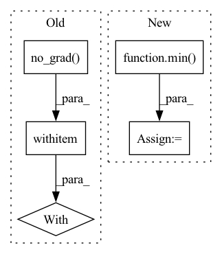

Pattern ID :7681
Before Change
count = torch.zeros_like(self.density_grid)
poses = poses.to(count.device)
with torch .no_grad():
for xi, xs in enumerate(X):
for yi, ys in enumerate(Y):
for zi, zs in enumerate(Z):
lx, ly, lz = len(xs), len(ys), len(zs)After Change
// cascading
for cas in range(self.cascade):
bound = min( 2 ** cas, self.bound)
half_grid_size = bound / resolution
// scale to current cascade"s resolution
cas_world_xyzs = world_xyzs * (bound - half_grid_size)
In pattern: SUPERPATTERN
Frequency: 3
Non-data size: 5
Instances Fragment ID: 25545079
Project Name: ashawkey/torch-ngp
Commit Name: 96af393225fdd443478a79e5b4dd8fe95e4e27b3
Time: 2022-04-08
Author: ashawkey1999@gmail.com
File Name: nerf/renderer.py
M Class Name: NeRFRenderer
N Class Name: NeRFRenderer
M Method Name: mark_untrained_grid(4)
N Method Name: mark_untrained_grid(4)
M Parent Class: nn.Module
N Parent Class: nn.Module
M File Name: nerf/renderer.py
N File Name: nerf/renderer.py
M Start Line: 344
M End Line: 384
N Start Line: 345
N End Line: 390
Before Change
def accuracy(output, target, topk=1):
Computes the accuracy over the k top predictions for the specified values of k
with flow .no_grad():
// TODO: support tuple topk=(1, 5, 10)
// maxk = max(topk)
batch_size = target.size(0)
_, pred = output.topk(topk, 1, True, True)
pred = pred.transpose(0, 1)After Change
def accuracy(output, target, topk=(1,)):
maxk = min( max(topk), output.size()[1])
batch_size = target.size(0)
_, pred = output.topk(maxk, 1, True, True)
pred = pred.t()
correct = pred.eq(target.reshape(1, -1).expand_as(pred)) Fragment ID: 25545083
Project Name: oneflow-inc/libai
Commit Name: 371360b9b903675607d2f92544962eb8b2330a17
Time: 2022-02-13
Author: 48727989+rentainhe@users.noreply.github.com
File Name: libai/evaluation/cls_evaluator.py
M Class Name: AnonimousClass
N Class Name: AnonimousClass
M Method Name: accuracy(3)
N Method Name: accuracy(3)
M Parent Class:
N Parent Class:
M File Name: libai/evaluation/cls_evaluator.py
N File Name: libai/evaluation/cls_evaluator.py
M Start Line: 31
M End Line: 49
N Start Line: 28
N End Line: 36
Before Change
else:
self.update_J_Broyden(h, self.prev_Y[0], self.current_Y)
with torch .no_grad():
self.update_hess()
self.update_grad(self.current_Y)
self.iteration += 1
After Change
elif self._count_reject == 8:
print("reject, resetting jacobian")
self.decision_history.append("reject")
self.L = min( 1e9, self.L / self.Lup**8)
self._count_reject += 1
else:
print("reject")
self.decision_history.append("reject") Fragment ID: 25545082
Project Name: connorstoneastro/autoprof
Commit Name: edac78536835e4e35ffd761462ea1607fd4fdbcc
Time: 2022-12-07
Author: connorstone628@gmail.com
File Name: autoprof/fit/lm.py
M Class Name: LM
N Class Name: LM
M Method Name: step(2)
N Method Name: step(2)
M Parent Class: BaseOptimizer
N Parent Class: BaseOptimizer
M File Name: autoprof/fit/lm.py
N File Name: autoprof/fit/lm.py
M Start Line: 85
M End Line: 154
N Start Line: 87
N End Line: 160